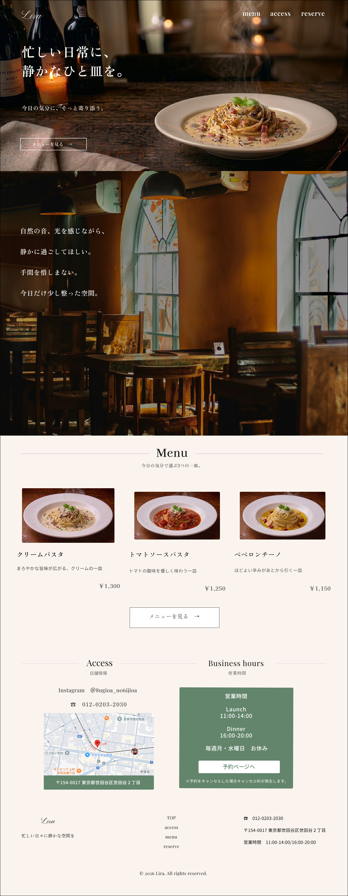

飲食店
コーポレートサイト
Restaurant — Corporate Site

料理を、静かに主役にする。大きな写真と余白で、料理そのものの魅力がまっすぐ伝わる構成に。過度な装飾を削ぎ落とし、店の世界観と信頼感を両立させました。
01課題 / The Challenge
伝えたい要素が多く、写真も文字も情報も詰め込まれて、肝心の「料理の魅力」が埋もれてしまっていました。
02アプローチ / The Approach
一画面ひとメッセージを基本に、写真を主役に据えたレイアウトへ。余白でリズムを作り、視線が自然に料理→こだわり→来店へと流れる構成にしました。
トップ メインビジュアル
スクリーンショットを配置
スクリーンショットを配置
メニュー / 店舗情報
スクリーンショットを配置
スクリーンショットを配置